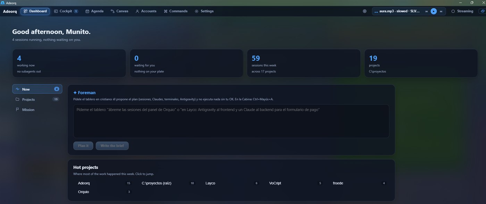
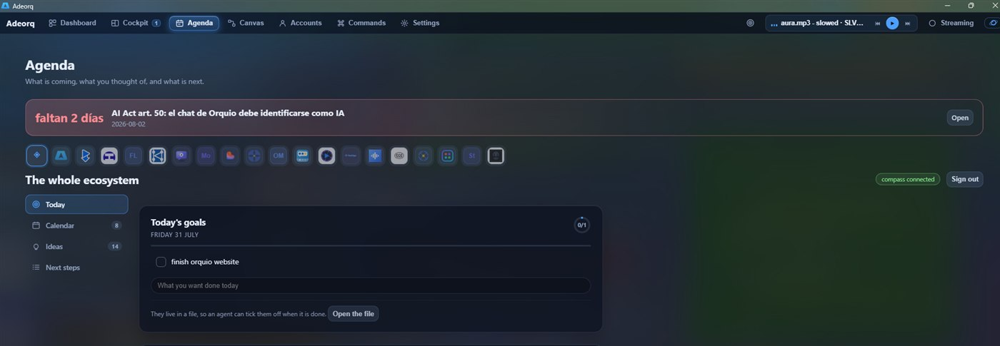
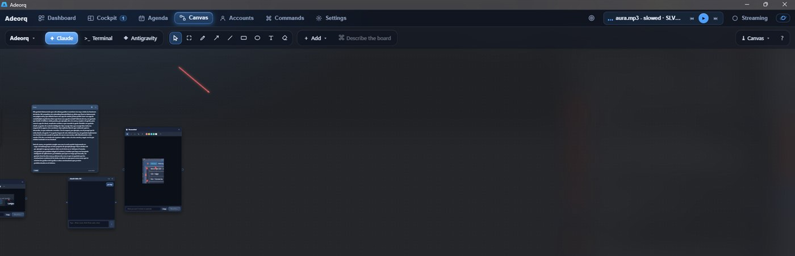
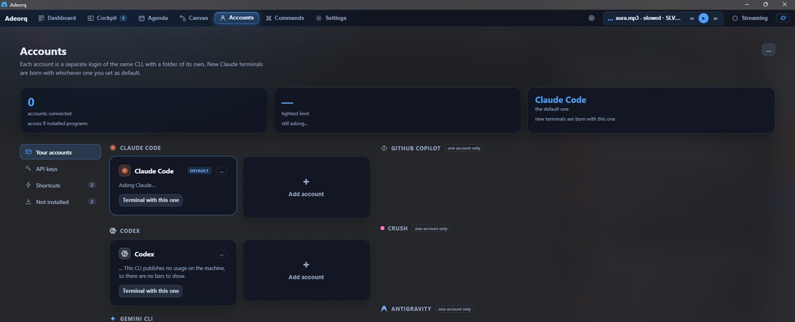
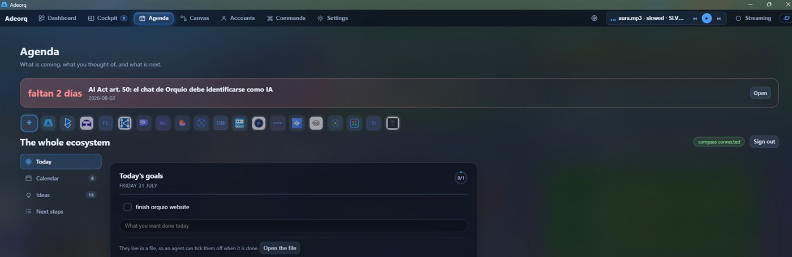

Documentación de Adeorq
Adeorq es un panel de escritorio para Windows que reúne tus proyectos y tus agentes de inteligencia artificial en terminales de verdad. Esta página recorre la aplicación pantalla por pantalla: qué hace cada cosa y por qué está donde está.
Qué es, y qué no es
Los agentes de IA que programan viven en la línea de comandos: Claude Code, Codex, Gemini CLI, Antigravity y compañía. Funcionan muy bien y tienen un problema práctico: cada uno es una ventana negra suelta, y en cuanto abres cuatro pierdes de vista quién está trabajando, quién ha terminado y quién lleva diez minutos esperando una respuesta tuya.
Adeorq es la sala donde caben todos. No sustituye a esos programas ni les añade una capa por encima: los ejecuta tal cual, en terminales reales, y pone alrededor lo que les falta.
Funciona con tus cuentas. Adeorq no incluye ni revende acceso a ningún modelo. Usa las suscripciones y las claves que ya tienes, y todo lo que hace ocurre en tu equipo: no hay servidor por medio ni cuenta que crear para usarlo.
Por qué la línea de comandos y no una aplicación
Porque las novedades llegan antes. Opus 5 se podía usar en la terminal antes que en la aplicación de escritorio, y el contexto de un millón de tokens tardó bastante más en llegar allí. Adeorq monta la experiencia encima de esos programas, así que tienes lo último el mismo día, con cara de aplicación.
Instalar
- Descarga el instalador desde la página de descargas.
- Ejecútalo. Windows puede avisar de que no reconoce al editor: es normal en programas sin firma comercial, y se pasa con Más información → Ejecutar de todas formas.
- Abre Adeorq. No hace falta crear ninguna cuenta ni introducir nada.
A partir de ahí se actualiza solo: comprueba si hay versión nueva al arrancar y cada seis horas, y te avisa con una barra arriba. No hace falta volver a la web.
Requisitos: Windows 10 o 11 de 64 bits. El instalador ocupa unos 4 MB.
Primeros pasos
Con Adeorq recién instalado, el camino más corto para ver de qué va:
- Ve a Cuentas. Adeorq mira qué programas de IA tienes instalados y te lo dice. Si te falta alguno, desde ahí se descarga.
- Ve a la Cabina y abre una terminal en uno de tus proyectos. Es una terminal normal: lo que escribirías en ella, escríbelo ahí.
- Vuelve al Panel. Ya verás tu sesión contada, y en la Agenda aparecerá en la lista con lo que esté haciendo.
La Cabina
Es donde se trabaja. Cada panel es una terminal de verdad, con su programa dentro, y puedes tener las que quieras a la vez repartidas en columnas y filas.
La barra lateral
A la izquierda están tus proyectos, y dentro de cada uno sus sesiones. Cada sesión lleva la marca del programa que la escribió, así que ves de un vistazo cuáles son de Claude y cuáles de Codex. El color del punto dice en qué estado está:
| Estado | Qué significa |
|---|---|
| Trabajando | El agente está haciendo algo ahora mismo. |
| Te espera | Ha terminado su turno preguntando o pidiendo permiso. La pelota está en tu tejado. |
| Lista | Entregó lo que le pediste y no espera nada. |
| Dormida | Sin actividad en un par de días, pero se puede retomar. |
Esa distinción no es cosmética: cerrar un panel que te estaba preguntando algo pierde la pregunta, así que Adeorq lee el historial de la sesión para saberlo de verdad en vez de adivinarlo por si suena la campana de la terminal.
La cabecera de cada panel
Cada terminal lleva encima lo que hace falta saber sin entrar a mirar:
- El contexto, en porcentaje. Cuánto lleva cargado esa conversación, medido contra la ventana real del modelo que estés usando.
- El modelo con el que está trabajando.
- Los agentes desplegados, si esa sesión ha repartido trabajo entre subagentes.
- El modo espejo, que aísla lo que el agente escriba en una rama de git aparte para que puedas revisarlo antes de aceptarlo.
El aviso de sesión cara. A partir de cierto tamaño, cada mensaje vuelve a pagar el contexto entero, y compactar paga de golpe todo lo acumulado. Adeorq avisa cuando una conversación llega ahí, para que la decisión de seguir o empezar de nuevo se tome con el dato delante.
El Panel
El resumen del día. Arriba, cuatro cifras que no dicen sólo cuánto hay, sino si tienes que hacer algo: cuántas sesiones trabajan ahora, cuántas te esperan, cuántas van esta semana y cuántos proyectos tienes. La primera es un botón que te lleva a la Cabina.

Ahora
El Capataz y los proyectos calientes. Al Capataz le pides el tablero en castellano («abre las sesiones del panel de Orquio», «un agente al frontend y otro al backend») y él propone el plan: qué sesiones abrir, con qué programa y con qué encargo. No ejecuta nada sin tu visto bueno.
Proyectos
Crear uno nuevo y la lista completa. Al crearlo, Adeorq deja la carpeta lista con
AGENTS.md (tus reglas para los agentes), docs/METAS.md y git
iniciado, para que la primera sesión empiece con contexto en vez de en blanco.
Misión
Despliega un equipo. Describes qué quieres, eliges proyecto y roles (Frontend, Backend, Seguridad, Diseño) y se abre un agente por rol, cada uno con su cometido, su reparto de archivos y coordinados entre ellos por un fichero común del proyecto. Cada uno te propone su plan y espera tu aprobación antes de tocar nada.
La Agenda
Lo que se te viene encima, lo que pensaste y lo que toca. Cada bloque lee de donde esa cosa ya vive, sin guardar una segunda copia de nada.

- Hoy — tus objetivos del día y todas tus sesiones, lo que te espera primero.
- Calendario — lo que tiene fecha porque la pone otro. Cada cosa avisa con la antelación que tú le pusiste, no con un umbral fijo.
- Ideas — las que tienes vivas o aparcadas, cada una con su condición de desbloqueo.
- Próximos pasos — el
METAS.mddel proyecto que estés mirando, leído de su carpeta y ampliable desde aquí.
Los objetivos del día
Qué dos o tres cosas quieres dejar cerradas hoy. No pertenecen a ningún proyecto: son tuyas y del día, y mañana empiezas con la hoja en blanco sin que nadie limpie nada.
Están en la Agenda, y también en un panel flotante que se abre desde el icono de diana de la barra superior y se queda sobre la pantalla en la que estés. Lo puedes arrastrar por su barra de título hasta donde te convenga, plegarlo para que ocupe sólo una línea con el contador, o devolverlo a su esquina.
Un agente puede tacharlos. Los objetivos no viven en la configuración, sino en un archivo de texto por día. Un agente sabe editar un archivo de texto, así que cuando una terminal termina lo que le pediste puede marcar el objetivo como hecho, y el panel lo recoge solo sin recargar nada.
El Lienzo
Un tablero infinito donde colocar terminales, notas, dibujos y widgets como si fueran piezas sobre una mesa. Sirve para pensar un trabajo con varias piezas a la vez en lugar de en una rejilla fija.

- Terminales conectadas entre sí: cuando una acaba, puede pasarle el relevo a la siguiente con su respuesta.
- Notas en Markdown con casillas, que también son archivos y que un agente puede marcar.
- El kanban: arrastras una tarjeta de «Por hacer» a «Trabajando» y se abre una terminal con ese encargo. Las otras tres columnas se llenan solas con lo que reporta cada agente.
- Widgets de trabajo: pomodoro, cronómetro, cuenta atrás, calculadora y un calendario con notas por día.
Las Cuentas
Una cuenta es un inicio de sesión del mismo programa, con su propia carpeta de configuración. Puedes tener varias del mismo y repartir el trabajo entre ellas.

- Tus cuentas — una tarjeta por programa instalado, diciendo si está conectada y cuánto llevas gastado de sus límites.
- Claves de API — la otra forma de pagar lo que consume un programa: por tokens en vez de con tu suscripción. Se guardan cifradas en el Gestor de Credenciales de Windows, nunca en un archivo de configuración, y no vuelven a salir de ahí.
- Atajos — qué programas aparecen al pasar el ratón por un proyecto en la barra lateral.
- No instalados — lo que te falta, con su botón de descarga.
Varias cuentas tuyas, sin problema. Turnarte cuentas de otras personas para estirar los límites incumple los términos de los proveedores, y lo que te juegas es el cierre de la cuenta.
Ajustes
Cómo se ve y cómo habla tu taller.

- Aspecto — idioma (español o inglés), veinticuatro temas y el fondo: puedes poner una imagen o un vídeo detrás de todo, graduar cuánto se ve y hacer que las terminales sean transparentes para que se vea a través del texto.
- Terminales — tamaño de letra, cuántas sesiones abre el botón de abrir todo y la recuperación.
- Avisos — cómo te avisa cuando un agente termina o te pregunta.
- Atajos — todas las combinaciones de teclas, editables.
- Modelo local — si tienes Ollama, Adeorq lo usa para tareas pequeñas sin gastar cuota.
- Discord — para que tu estado en Discord diga en qué estás trabajando.
- Ayuda — la guía completa dentro de la aplicación y el enlace a esta documentación.
- Adeorq — versión instalada, buscar actualizaciones y tu consumo semanal.
El modo emisión
Pensado para grabar o compartir pantalla: tapa rutas, correos, claves y datos personales de las terminales de un golpe. Se activa con Ctrl + Mayús + E y con Alt puedes mirar debajo un momento sin desactivarlo.
Atajos
| Atajo | Qué hace |
|---|---|
| Ctrl + Mayús + A | Llamar al Capataz |
| Ctrl + Mayús + M | Llamar al Capataz y dictarle |
| Ctrl + Mayús + E | Modo emisión |
| Ctrl + Mayús + P | Tapar la pantalla entera |
| Alt (mantener) | Mirar debajo del modo emisión |
| Esc | Cerrar lo que esté abierto encima |
Todos son editables en Ajustes → Atajos.
Dónde guarda tus cosas
Todo en tu equipo, y en formatos que puedes abrir por tu cuenta:
| Qué | Dónde |
|---|---|
| Objetivos del día | %LOCALAPPDATA%\Adeorq\objetivos\, un Markdown por día |
| Notas del lienzo | %LOCALAPPDATA%\Adeorq\notas\, en Markdown |
| Claves de API | Gestor de Credenciales de Windows, cifradas por el sistema |
| Rastro de fallos | %LOCALAPPDATA%\Adeorq\rastro.log |
| Sesiones e historiales | Donde los deja cada programa: Adeorq los lee, no los copia |
Dudas frecuentes
¿Necesito una cuenta de Adeorq?
No. Adeorq no tiene cuentas, ni servidor, ni te pide nada al instalarlo.
¿Sustituye a Claude Code o a Codex?
No: los ejecuta. Adeorq no toca lo que esos programas hacen ni cómo lo hacen; pone la sala alrededor. Si mañana sacan una función nueva, la tienes el mismo día.
¿Se lleva mis datos a algún sitio?
No. Todo lo que ves ocurre en tu equipo. La aplicación sólo sale a internet para comprobar si hay una versión nueva.
¿Puedo usar dos cuentas del mismo programa?
Sí, siempre que sean tuyas. Cada una vive en su carpeta de configuración y no se pisan.
¿Qué pasa si cierro un panel con un agente trabajando?
Se cierra el programa y todo lo que colgara de él. Si estaba a mitad de un turno, ese trabajo se pierde: mira el estado del panel antes de cerrarlo.
Windows dice que el instalador no es seguro
Es el aviso estándar para programas sin firma comercial de pago. El instalador va firmado con la clave del actualizador de Adeorq, que es lo que garantiza que la actualización que te llega es la nuestra.